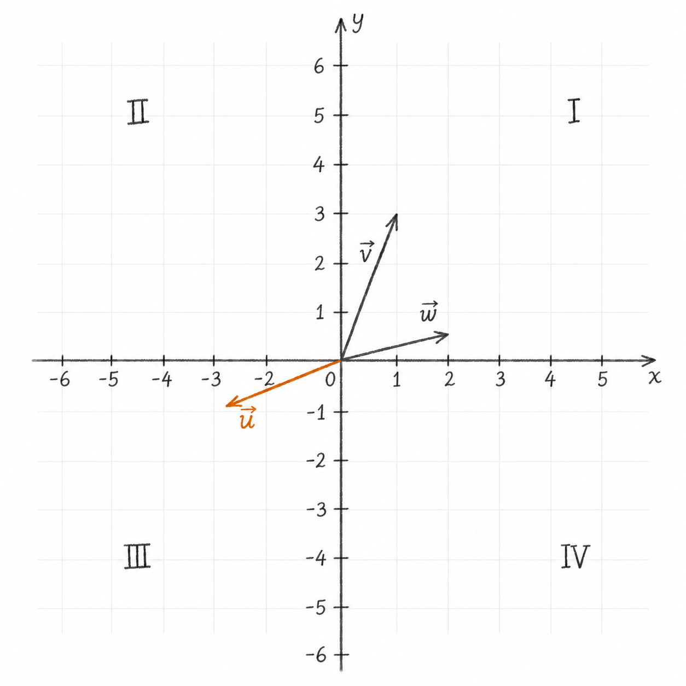

Subspaces and the Basis for a Subspace
1 Linear Subspaces
Source: Khan Academy — Subspaces and the Basis for a Subspace
We now possess the tools to understand the idea of a linear subspace in \(\mathbb{R}^n\).
Suppose \(V\subseteq\mathbb{R}^n\) (meaning: \(V\) is a subset of \(\mathbb{R}^n\)). For \(V\) to be a subspace of \(\mathbb{R}^n\), three conditions must be satisfied:
- The zero vector belongs to \(V\)
- If \(\vec{x}\in V\) and \(c \in \mathbb{R}\), then \(c\vec{x}\in V\) (closure under scalar multiplication)
- If \(\vec{a}, \vec{b}\in V\), then \(\vec{a}+\vec{b}\in V\) (closure under addition)
1.1 Example 1
Suppose we have \(V=\left\{\vec{0}\right\}, \vec{0}=\begin{bmatrix}0\\0\\0\end{bmatrix}\). Is \(V\) a subspace of \(\mathbb{R}^3\)? Let’s see if it satisfies the three conditions for a subspace:
- the only vector in \(V\) is \(\vec{0}\), so this condition is satisfied
- \(c\vec{0}=\vec{0}, c\in\mathbb{R}\), we have closure under scalar multiplication
- \(\vec{0}+\vec{0}=\vec{0}\), we have closure under addition
All three conditions are met, so clearly \(V\) is a subspace of \(\mathbb{R}^3\).
1.2 Example 2
Say we have the set \(S\) which is the set of all vectors in \(\mathbb{R}^2\) such that \(x_1\) is greater than or equal to \(0\):
\[ S=\left\{ \begin{bmatrix} x_1\\ x_2 \end{bmatrix} \in\mathbb{R}^2 \;\middle|\; x_1\ge 0 \right\}. \]
Is this set a subspace of \(\mathbb{R}^2\)?
Looking at Figure 1, if we multiply a vector in \(S\) whose first component satisfies \(x_1>0\) by a negative scalar, its first component becomes negative, so the resulting vector is not in \(S\).
Therefore \(S\) is not a subspace of \(\mathbb{R}^2\).

1.3 Example 3
One more example just to kind of drive the point home.
Let’s say I want to know the span of some vectors. Is the span of a collection of vectors always a subspace?
\[ \text{Let } \vec{v}_1,\vec{v}_2,\vec{v}_3\in\mathbb R^n, \qquad U=\operatorname{span}(\vec{v}_1,\vec{v}_2,\vec{v}_3) \]
Is \(U\) a valid subspace of \(\mathbb{R}^n\)?
First, does it contain the \(\vec{0}\)? If we multiply by \(0\), we get:
\[ 0\vec{v}_1 + 0\vec{v}_2 + 0\vec{v}_3 = \vec{0} \]
So yes, it contains the zero vector.
Do we have closure under scalar multiplication? Let’s pick a random vector from within the set, say \(\vec{x}\). Now, in order to be part of the set, \(\vec{x}\) must be a linear combination of \(\vec{v}_1, \vec{v}_2, \vec{v}_3\):
\[ \vec{x}=c_1\vec{v}_1 + c_2\vec{v}_2 + c_3\vec{v}_3 \]
If we now multiply both sides by another arbitrary constant, we get:
\[ a\vec{x}=ac_1\vec{v}_1 + ac_2\vec{v}_2 + ac_3\vec{v}_3 ,\qquad a\in\mathbb{R} \]
This clearly gives us a vector within the span, therefore we have closure under scalar multiplication.
Do we have closure under addition? Let’s define another vector that’s within the span:
\[ \vec{y} = d_1\vec{v}_1 + d_2\vec{v}_2 + d_3\vec{v}_3 \]
Now, what is \(\vec{x} + \vec{y}\)?
\[ \vec{x} + \vec{y} = c_1\vec{v}_1 + c_2\vec{v}_2 + c_3\vec{v}_3 + d_1\vec{v}_1 + d_2\vec{v}_2 + d_3\vec{v}_3 \]
which can be written as:
\[ \vec{x} + \vec{y} = (c_1+d_1)\vec{v}_1+(c_2+d_2)\vec{v}_2+(c_3+d_3)\vec{v}_3 \]
which also must be in the span. Therefore we also have closure under addition.
We can conclude that \(U\) is a valid subspace of \(\mathbb{R}^n\).
2 Basis of a Subspace
A basis is a linearly independent spanning set.
In mathematics, a set \(B\) of elements of a vector space \(V\) is called a basis (pl.: bases) if every element of \(V\) can be written in a unique way as a finite linear combination of elements of \(B\). The coefficients of this linear combination are referred to as components or coordinates of the vector with respect to \(B\). The elements of a basis are called basis vectors.
\[ B=\{\vec{v}_1,\vec{v}_2,\dotsc,\vec{v}_k\}, \qquad V=\operatorname{span}(B), \qquad \sum_{i=1}^{k} a_i\vec{v}_i=\vec{0} \implies a_1=\dotsb=a_k=0. \]
To state that the vectors \(\vec{v}_1,\ldots,\vec{v}_k\) are linearly independent, we must have:
The only linear combination of the vectors \(\vec{v}_1,\ldots,\vec{v}_k\) that equals the zero vector is the one in which every coefficient is zero.
Said in other words:
A finite set is linearly dependent exactly when at least one of its vectors can be written as a linear combination of the remaining vectors.
2.1 Example
Suppose we have:
\[ \vec{v} = \begin{bmatrix} 2\\3 \end{bmatrix} , \vec{w} = \begin{bmatrix} 7\\0 \end{bmatrix} \qquad S = \left\{ \vec{v} , \vec{w} \right\} \]
Is the set \(S\) a basis for \(\mathbb{R}^2\)?
We need to figure out whether \(S\) spans \(\mathbb{R}^2\) and is linearly independent.
We place the vectors into a matrix as its columns and calculate the determinant. If the determinant is nonzero, the columns are linearly independent. Since there are two linearly independent vectors in \(\mathbb R^2\), they also span \(\mathbb R^2\).
The determinant for a \(2\times2\) matrix is defined as:
\[ \det \begin{bmatrix} a & b \\ c & d \end{bmatrix} = ad-bc \]
For our example the matrix will be:
\[ A = \begin{bmatrix} 2 & 7 \\ 3 & 0 \end{bmatrix} ,\qquad \det A = 2\cdot0-7 \cdot 3 = -21 \]
Since \(\det(A)=-21\ne0\), the vectors \(\vec{v}\) and \(\vec{w}\) are linearly independent and span \(\mathbb{R}^2\). Therefore, \(S=\{\vec{v},\vec{w}\}\) is a basis for \(\mathbb{R}^2\).